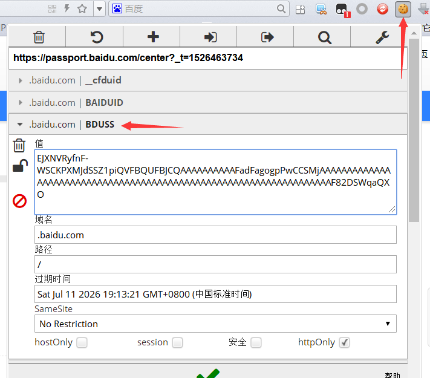

百度网盘免和谐分享介绍
百度网盘免和谐分享利用百度网盘秒传机制，实现任意文件分享链接生成与批量转存。在一键分享页面可以生成bdpan://专用链，该专用链包含文件的特征值；在一键转存页面可以输入别人分享的bdpan://专用链，批量转存到自己的网盘。
生成分享链接时浏览器卡住
生成分享链接需要 Chrome 、Edge 或 Chromium 内核的浏览器，不支持IE浏览器。如果文件太大请耐心等待，具体生成时间与电脑配置有关。
一键转存时提示"该链接已失效"
说明该链接是无效链接，分享者在生成该链接的时候没有先将文件上传到百度网盘，或者百度网盘已经屏蔽该文件的上传。
如何分享多个文件夹
生成分享链接之后，在开头增加一条链接 bdfolder://文件夹名称 ，这样这一条链接下面跟着的所有bdpan://链接都会转存到该文件夹，直到出现下一个bdfolder://链接定义新的目录为止。支持多级目录，例如 bdfolder://我的应用/游戏/策略类游戏 ，转到根目录为 bdfolder://
手动获取BDUSS的方法
1.使用 Chrome 或 Chromium 内核的浏览器
2.下载插件 EditThisCookie 立即下载
下载该插件并运行，提示添加(无法添加说明浏览器不支持)，添加完成后浏览器右上角会多个饼干图标
3.打开百度登录页面 立即下载
4.在登录页面登录后，点击浏览器右上角的饼干图标，找到BDUSS，复制内容即可
